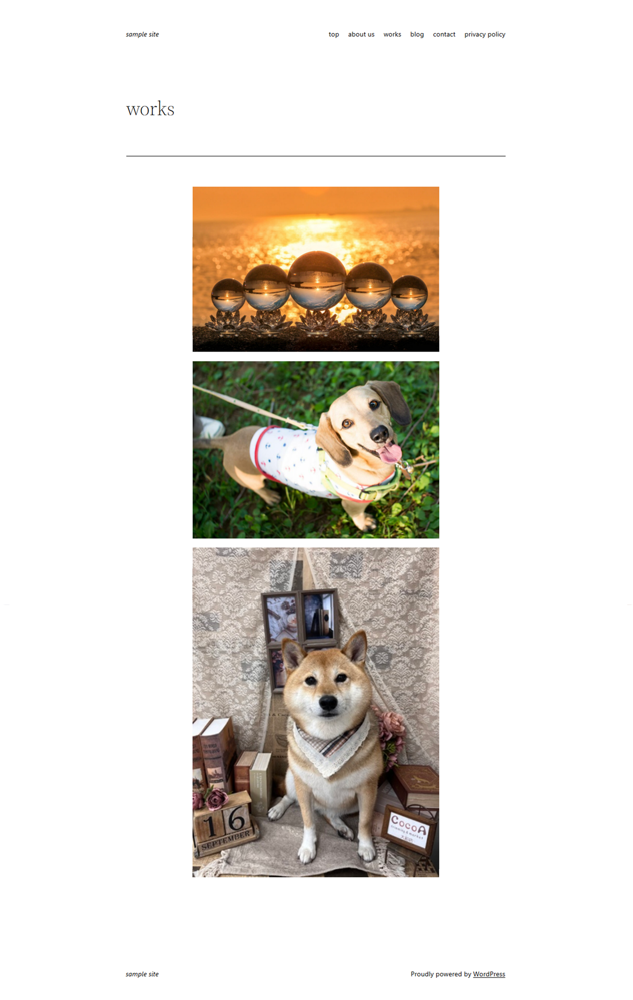
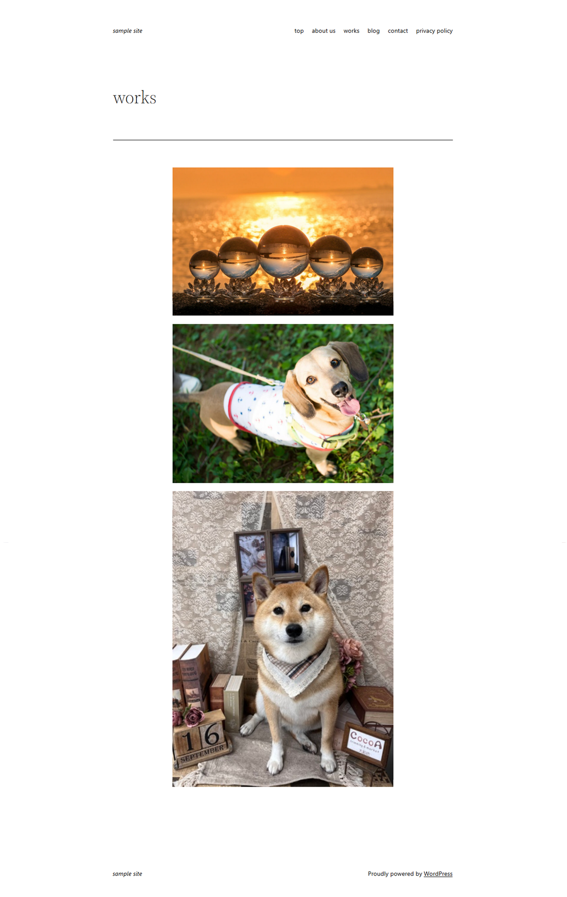

作品①：Sample Site（WordPress）
WordPressで作成したサンプルサイトです。トップページや投稿ページなどのスクリーンショットを掲載しています。
 

（現在はローカル環境のため、オンラインでの閲覧は準備中です）
作品②：パスワード生成アプリ
HTML/CSS/JavaScriptのみで構築したアプリです。ユーザーがパスワードの長さや構成を選べるシンプルなツールです。
作品を見る作品③：日本語クイズアプリ
HTMLとJavaScriptを用いて制作した日本語クイズアプリです。3択問題で楽しく言葉を学べます。
作品を見る